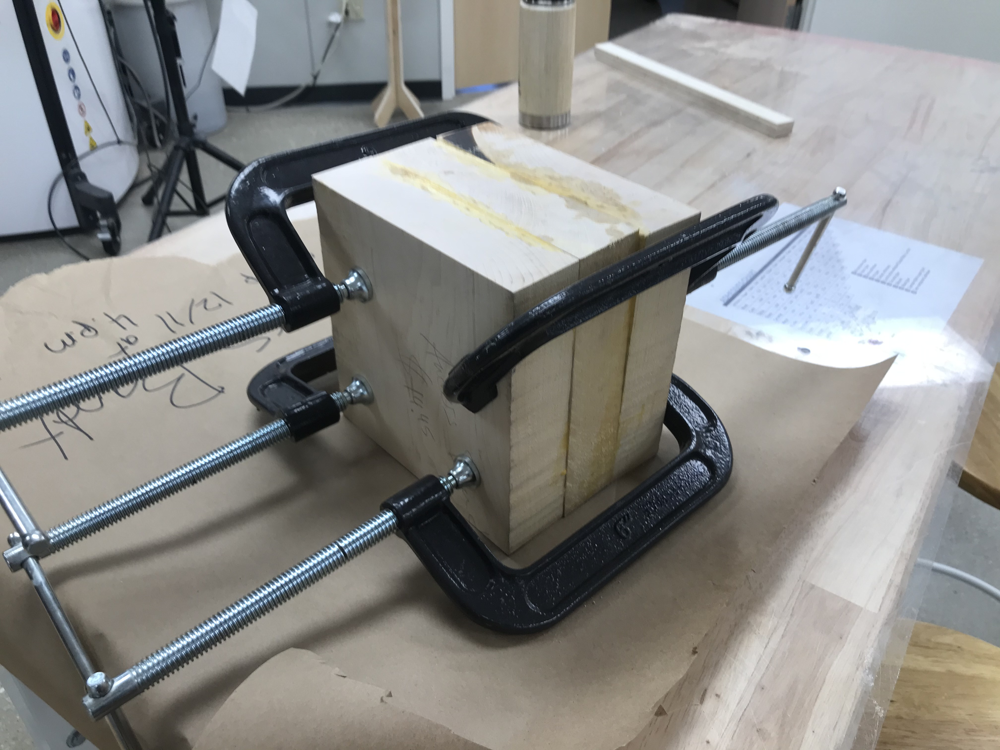
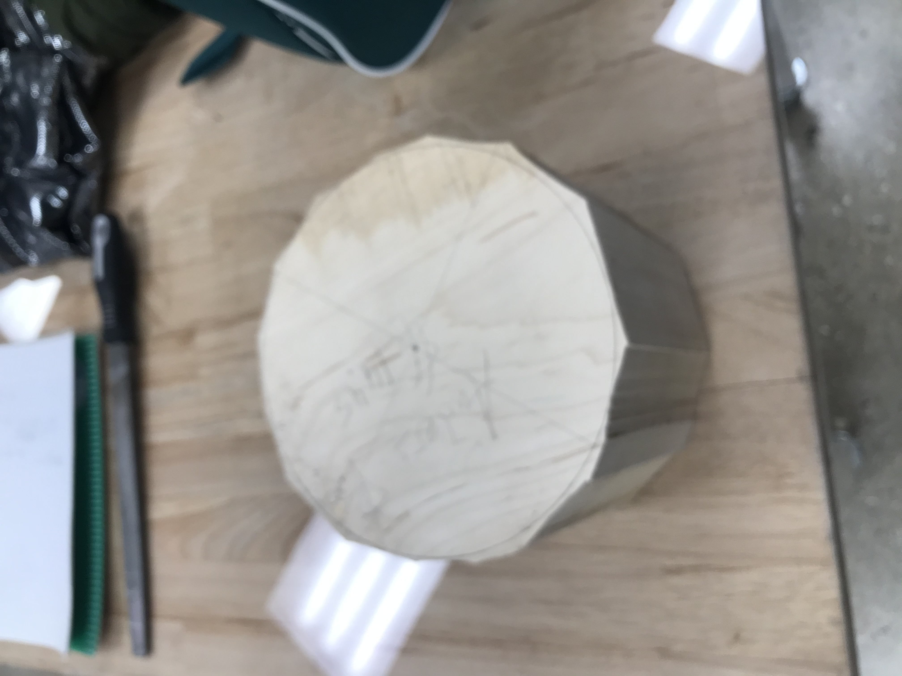
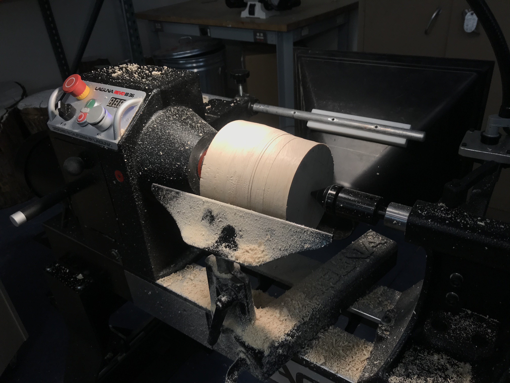
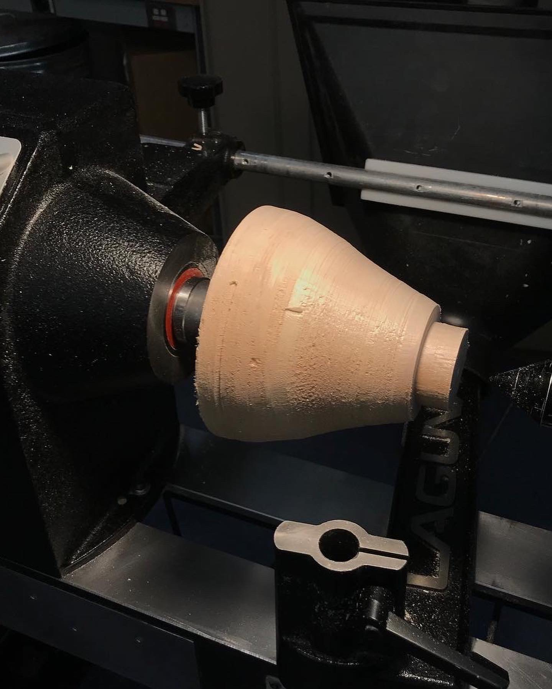
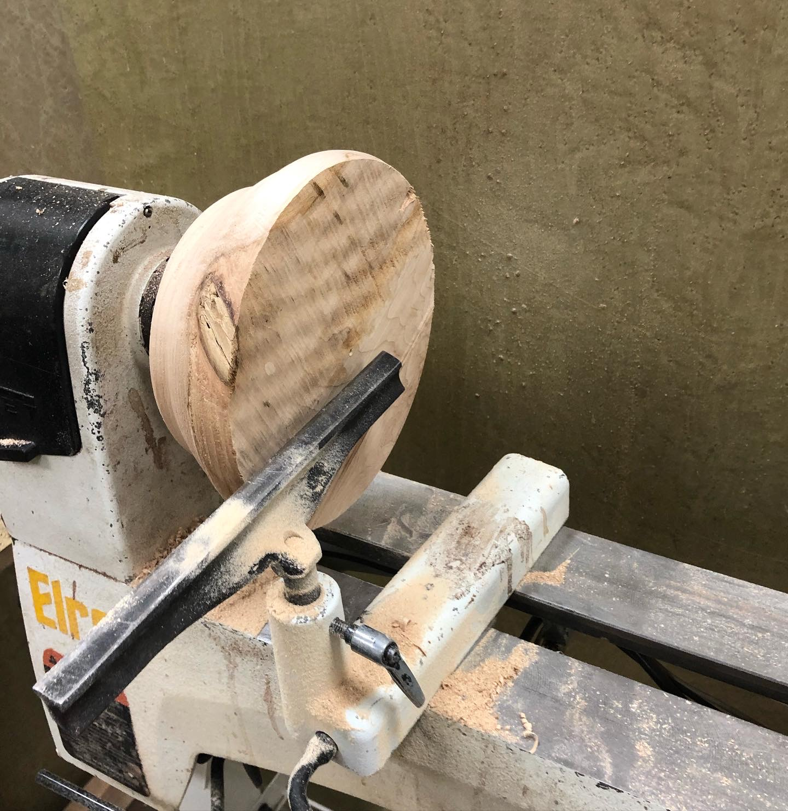
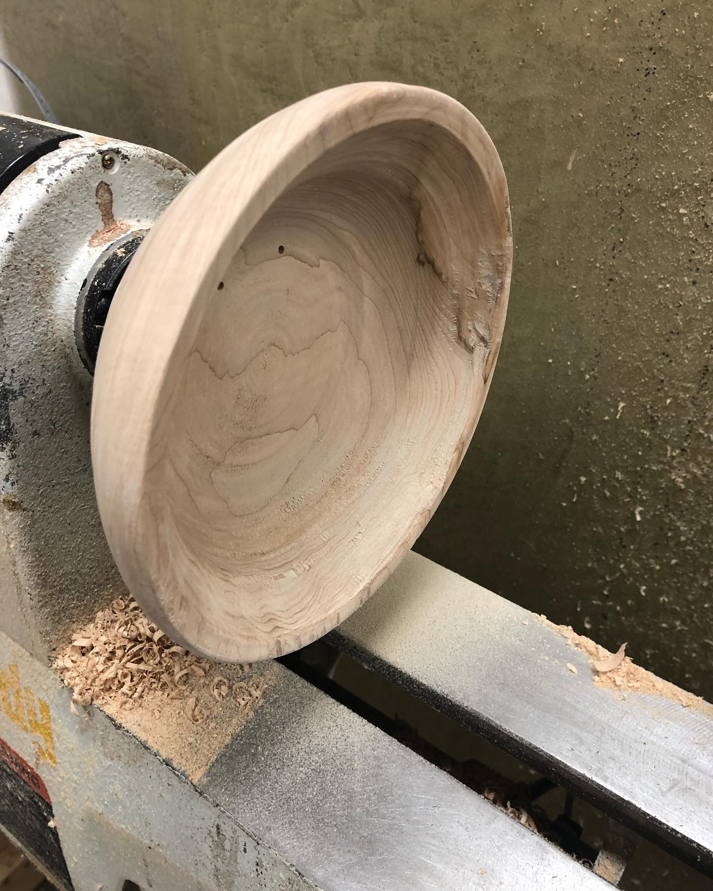
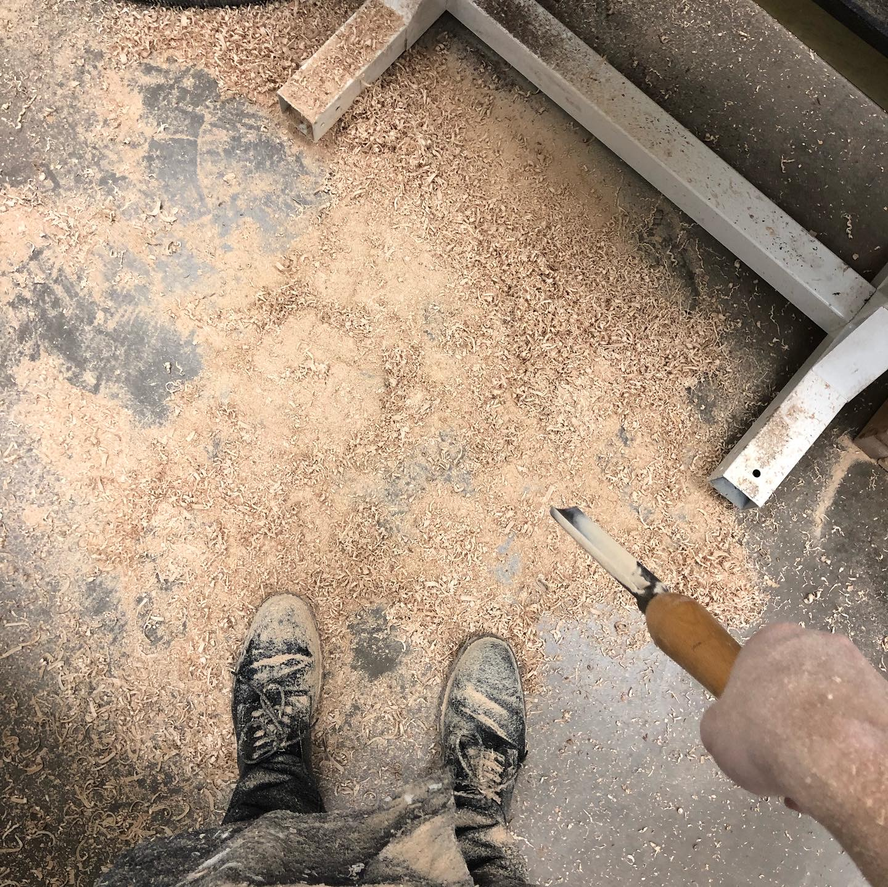

Modified on: =this.file.mtime
Introduction
Background
In this project I provide a brief outline of the process of turning a wooden bowl on a lathe from start to finish. I made this bowl my sophomore year of college as a gift to my Dad.
Motivations
I really mainly did this project because I got really interested in trying out all the fancy, large equipment in my college's machine shop that I never had access to before. I took woodworking certification courses, and got access to the lathe.

Materials Needed
Resources
For me, this process deserves its own section. If you are a lucky person with access to prime bowl turning wood, then move right on ahead.
I am in college and don't have access to a car so I couldn't really drive all around town looking for wood. I had to source my wood at my university machine shop as it is the closest access to wood I have to campus. The woodworking guy there originally gave me a dried out log for free that the grounds people had cut up.
My final solution was purchasing a maple board and sawing it into thirds, then glueing all the thirds on top of each other to make a big square block. This is a good tactic to getting a bowl blank if you don't have access to good, not cracked, wood logs.
Creating the bowl
Process
Really there are a few key things to keep in mind
- Glueing up the blanks
- Making rough cuts
- Taking it to the lathe
Pretty self explanatory set, liberally apply wood glue to all the internal layers and clamp it up to dry. It is, however, a very important step. If not glued properly, your blank will come apart on the lathe which is the last thing you want.

Bandsaw time
If you were to take that square stock blank straight to the wooden lathe, every time a corner of it would come down at an aggressive speed and you would surely cause some injury to your hands when trying to use the lathe.

Lathe time


Conclusion
Challenges
Well.. if you can tell from the pictures my "bowl" turned out to be a bowl shaped object with no actual inner part. This is because the part of the bowl where the chuck of the lathe grabs onto snapped as I was carving out the inner part. So my first improvement for the next bowl would be to lathe out a larger/stronger part for the chuck to grab onto to prevent this from happening. Besides that, I still would like to use a log as the bowl blank. I'm still happy with how it turned out!
Overall
Even with the failure of it actually becoming a bowl, it worked well enough for a Christmas gift (who doesn't love a handmade gift!?)
I will note that I did make improvements on my technique, and in fall of 2022 successfully turned a bowl that actually looked like a bowl


